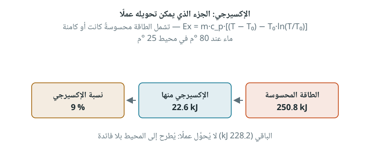

الإكسيرجي
Exergy
الإكسيرجي هي أقصى شغل مفيد يمكن استخراجه من نظام عندما يصل إلى التوازن مع بيئته، ووحدتها J. وهي تختلف عن الطاقة: الطاقة تُحفظ، أما الإكسيرجي فتُستهلك في كل عملية حقيقية. ولهذا يقيس الإكسيرجي جودة الطاقة لا كميتها، ويُستعمل في تحليل الكفاءة الحقيقية.
الطاقة في غرفة دافئة والطاقة نفسها في ماء ساخن ليستا متساويتين في القيمة: الأولى لا تُنتج شغلاً لأنها في توازن مع البيئة، والثانية تُنتج. والإكسيرجي هي التي تقيس هذه القيمة. وتُحسب من الفرق عن حالة البيئة المرجعية T₀ وp₀. وكل عملية حقيقية تُنتج إنتروبيا فتُهدر إكسيرجي، وهذا الإهدار هو ما يقيسه تحليل الإكسيرجي. مثال: 1.0 kg ماء عند 80 °C في بيئة 20 °C له إكسيرجي فيزيائية = m·c_p·[(T − T₀) − T₀·ln(T/T₀)] = 1.0×4.18×[(353.15 − 293.15) − 293.15×ln(353.15/293.15)] = 4.18×[60 − 54.6] = 22.6 kJ.
كيف تعمل الظاهرة؟
الشغل يُستخرج من نظام عندما يكون في حالة عدم توازن مع بيئته، لأن التوازن يعني انعدام القوة الدافعة. والإكسيرجي تقيس مقدار عدم التوازن هذا: فرق حرارة أو ضغط أو تركيب. وعندما يعمل النظام نحو التوازن تُنتج إنتروبيا، وكل إنتروبيا مُنتجة تُهدر إكسيرجي بمقدار T₀·S_gen. ولهذا لا يمكن استرداد الإكسيرجي كاملة في أي عملية حقيقية، والفرق بين الإكسيرجي المُدخلة والمُستفادة هو الإهدار.
العلاقة بالأرقام
Ex = (H − H₀) − T₀(S − S₀). وللحرارة المنقولة عند T: Ex_Q = Q(1 − T₀/T)، وهو معامل كارنو. مثال: حرارة 100 kW عند 500 K في بيئة 300 K لها إكسيرجي 100×(1 − 300/500) = 40 kW، أي 40% فقط. ولو كانت عند 1000 K لكانت 70 kW. ولهذا تكون الحرارة العالية أنفع من الكمية نفسها عند حرارة منخفضة.
مفاهيم متقاربة
يُفرَّق بين الإكسيرجي والطاقة: الأولى تُستهلك والثانية تُحفظ. ويُفرَّق بين الإكسيرجي والطاقة الحرة لغبس: الثانية تُعرَّف عند T وp ثابتين، والأولى عند حالة بيئية مرجعية. ويُفرَّق بين الإكسيرجي والإنتروبيا: الأولى بوحدة طاقة والثانية بوحدة طاقة على حرارة. وأخيراً يُفرَّد بين الكفاءة الحرارية والكفاءة الإكسيرجية: الأولى نسبة الشغل إلى الحرارة، والثانية نسبة الشغل إلى الإكسيرجي المتاحة، وهي دائماً أعلى.
حدود التطبيق
الإكسيرجي لا معنى لها بلا تعريف صريح للبيئة المرجعية T₀ وp₀، فتتغير بتغيّرها. ولا تصف الأنظمة التي لا تصل إلى التوازن مع البيئة في زمن معقول. ولا تصف العمليات التي لا تُنتج شغلاً، حيث تكون الإكسيرجي نظرية لا عملية. ولا تصف الجوانب الاقتصادية، فالإكسيرجي العالية لا تعني بالضرورة قيمة سوقية عالية. وأخيراً لا تصف الأنظمة الحيّة بلا افتراضات إضافية عن حدود النظام.

| الكمية | القيمة | المصدر |
|---|---|---|
| الإكسيرجي لماء عند 80 °C | 22.6 kJ | [1] |
| الطاقة المحسوسة نفسها | 250.8 kJ | [1] |
| نسبة الإكسيرجي إلى الطاقة | 9.0 % | [1] |
المصادر
- 1 Specific Heat Capacity of Water: Temperature-Dependent Data and Calculator — The Engineering ToolBox (2026). www.engineeringtoolbox.com/specific-heat-capacity-water-d_660.html · اطُّلع عليه 2026-11-22
- 2 CODATA Value: Boltzmann constant — NIST — CODATA 2022 recommended values (2024). physics.nist.gov/cgi-bin/cuu/Value?k · اطُّلع عليه 2026-11-22
استشهد بهذا المصطلح
الصيغتان مبنيتان من بيانات الصفحة نفسها: العنوان والتاريخ ورابط النسخة المنشورة.
الإكسيرجي — Exergy. (2026). ديوان المعرفة — انفراد. https://infiradev.com/diwan/terms/term-exergy.html
@misc{term-exergy2026,
title = {الإكسيرجي},
titleaddon = {Exergy},
howpublished = {{ديوان المعرفة — انفراد} — مرجع علمي عربي},
year = {2026},
url = {https://infiradev.com/diwan/terms/term-exergy.html},
urldate = {2026-11-22},
note = {مراجعة علمية: تحرير انفراد الآلي — نُشر بأمر عبدالله الهويدي}
}
راجعه: تحرير انفراد الآلي — نُشر بأمر عبدالله الهويدي · 2026-11-22 · آخر تحديث 2026-11-22